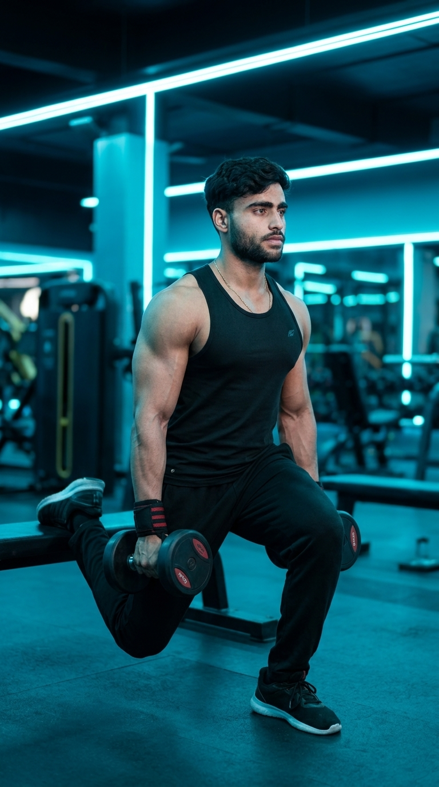

Primary Muscle
Quadriceps & Glutes
Build Stronger Legs, Better Balance, and Powerful Glutes One Leg at a Time
The Bulgarian Split Squat is one of the most effective unilateral lower-body exercises for developing leg strength, muscle growth, balance, and stability. By elevating the rear foot, this movement places greater emphasis on the front leg, challenging the quadriceps, glutes, hamstrings, and core while helping correct muscular imbalances between both sides of the body. Whether you're training for strength, athletic performance, or muscle development, the Bulgarian Split Squat is an essential addition to any leg workout.

Quadriceps & Glutes
Bench & Dumbbells
Intermediate
Compound
Discover which muscles drive the Bulgarian Split Squat and how the supporting muscle groups work together to build stronger legs, improve balance, enhance stability, and develop powerful lower-body strength through unilateral training.
Knee Extension, Hip Extension & Lower-Body Strength
Hip Stability & Knee Support
Ankle Stability & Balance Control
Balance, Postural Stability & Pelvic Control
Discover how the Bulgarian Split Squat builds unilateral leg strength, improves balance and coordination, enhances athletic performance, corrects muscle imbalances, and develops stronger, more stable lower-body movement.
The Bulgarian Split Squat develops exceptional unilateral strength by forcing each leg to work independently, leading to stronger quadriceps, glutes, and hamstrings.
Training one leg at a time helps identify and reduce strength differences between both sides, improving muscular symmetry and lowering injury risk.
Because the exercise is performed on one leg, it challenges your balance, coordination, and body control, making everyday movements and athletic performance more efficient.
Strengthening the muscles surrounding the hips, knees, and ankles improves joint stability while promoting better movement mechanics during sports and daily activities.
Increased lower-body power, stability, and force production can improve sprinting, jumping, change of direction, and overall athletic performance.
Whether performed with body weight or dumbbells, the Bulgarian Split Squat is a versatile exercise that delivers excellent lower-body results at the gym or at home with minimal equipment.
Follow these step-by-step instructions to perform the Bulgarian Split Squat with proper posture, controlled movement, and correct leg positioning to maximize lower-body strength, muscle growth, and balance while minimizing injury risk.
Stand about two feet in front of a flat bench and place the top of one foot behind you on the bench. Keep your front foot planted firmly with your chest upright and your core engaged.
Position your front foot far enough forward so your knee stays comfortably behind or directly above your toes at the bottom.
Slowly bend your front knee and lower your body straight down until your front thigh is nearly parallel to the floor and your rear knee approaches the ground.
Keep your torso upright and avoid letting your front knee collapse inward.
Push through the heel of your front foot to extend your knee and hip, returning to the starting position while maintaining balance throughout the movement.
Think about lifting your body upward rather than pushing yourself forward.
Keep your hips square, your spine neutral, and your core braced throughout every repetition. Avoid excessive leaning or twisting as you move.
Keep your eyes looking forward to help maintain better posture and balance.
Perform the desired number of controlled repetitions on one leg before switching sides. Maintain the same range of motion and tempo on both legs to ensure balanced strength development.
Prioritize perfect technique and full control before increasing the weight.
Avoid these common technique mistakes to maximize leg development, improve balance and stability, and perform the Bulgarian Split Squat safely and effectively.
Allowing the front knee to cave inward reduces stability and increases stress on the knee joint, making the exercise less effective.
Keep your front knee tracking in line with your toes throughout every repetition.
A stance that is too short limits your range of motion, shifts unnecessary stress onto the knee, and makes balancing more difficult.
Adjust your front foot until your knee stays comfortably over your foot at the bottom of the movement.
Leaning too far forward or backward shifts the load away from the target muscles and reduces exercise efficiency.
Keep your chest lifted, spine neutral, and core braced throughout the movement.
Lifting excessive weight often leads to poor balance, reduced range of motion, and improper technique, increasing the risk of injury.
Master bodyweight technique first, then add dumbbells gradually while maintaining full control and proper form.
Apply these expert coaching cues to improve your Bulgarian Split Squat technique, maximize lower-body muscle activation, and perform every repetition with better balance, stability, and control.
Position your front foot far enough forward so your knee stays comfortably aligned over your foot at the bottom of the movement while maintaining full balance.
A proper stance makes every repetition smoother and more effective.
Maintain an upright torso with a neutral spine and engaged core throughout the exercise to improve stability and maximize leg muscle activation.
Good posture keeps the focus on your legs—not your lower back.
Descend slowly and deliberately instead of dropping into the movement. Controlled repetitions improve muscle activation, balance, and overall technique.
Control every inch of the movement from top to bottom.
Drive through the heel of your working leg to stand back up, allowing the quadriceps and glutes to generate most of the force while maintaining proper balance.
Let your front leg do the work while the rear leg provides balance.
Progress from mastering bodyweight Bulgarian Split Squats to performing challenging weighted variations while maintaining excellent balance, proper technique, and full range of motion.
Start with bodyweight only while learning proper stance, balance, posture, and movement mechanics before introducing additional resistance.
Balance, body control, stance setup, and full range of motion.
Perform slow, controlled repetitions while keeping your torso upright, knee aligned, and core engaged throughout every repetition.
Stability, controlled tempo, proper alignment, and consistent technique.
Once your balance and technique are consistent, increase the challenge by holding dumbbells while maintaining the same movement quality.
Progressive overload, unilateral strength, and muscle growth.
Progress to heavier dumbbells, barbells, deficit Bulgarian Split Squats, or paused repetitions while preserving perfect balance and technique.
Maximum single-leg strength, athletic performance, muscle development, and long-term progression.
Find answers to common questions about Bulgarian Split Squat technique, muscles worked, balance, proper form, training frequency, and how to safely build stronger legs with this powerful unilateral exercise.
The Bulgarian Split Squat primarily targets the quadriceps and glutes while also engaging the hamstrings, calves, and core to improve balance, stability, and single-leg strength.
Both exercises are highly effective. The Bulgarian Split Squat excels at improving unilateral strength, correcting muscle imbalances, and enhancing balance, while traditional squats are better suited for building overall lower-body strength with heavier loads.
Yes. Beginners can start with bodyweight to learn proper balance and technique before progressing to dumbbells or other weighted variations.
For muscle growth, perform 3–4 sets of 8–12 repetitions per leg. For strength, use heavier resistance for 4–6 repetitions while maintaining proper form and balance.
This exercise combines single-leg strength, balance, coordination, and core stability, making it more demanding than many traditional lower-body exercises—even when using lighter weights.
Most people benefit from performing Bulgarian Split Squats one to two times per week as part of a balanced leg-training program, allowing adequate recovery between sessions.
Explore other leg exercises that complement the Bulgarian Split Squat and help you build stronger quadriceps, glutes, hamstrings, balance, and overall lower-body strength through both compound and isolation movements.


Continue building stronger legs with step-by-step exercise guides covering proper technique, muscles worked, common mistakes, expert coaching tips, and progression strategies for every fitness level.